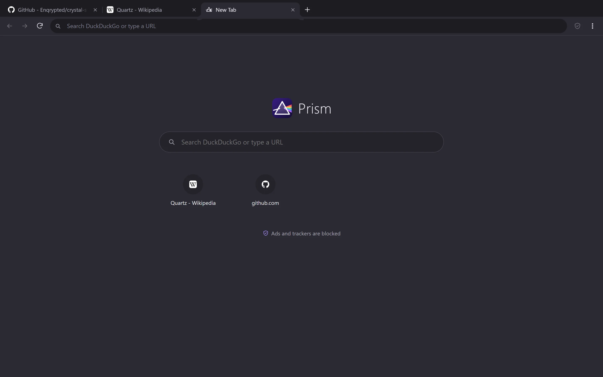

Prism
A Chromium browser with ad and tracker blocking built in, and nothing you didn’t ask for: no account, no sync, no news feed, no telemetry.

The web, without the tracking
Ads and trackers blocked
EasyList, EasyPrivacy and uBlock Origin filters, on by default. The shield shows what each page tried to load.
Private by default
Third-party cookies blocked, every site upgraded to HTTPS, Global Privacy Control sent, and no WebRTC address leaks.
Private windows
Nothing is written to disk, and everything is dropped when the last private window closes.
Feels familiar
Tabs, address bar suggestions, bookmarks, history, downloads, find in page, zoom per site and developer tools.
Your search engine
DuckDuckGo by default, or Brave Search, Startpage, Ecosia, Google or Bing.
Also on its own
Install Prism from the launcher, or download the standalone Prism installer.

More free apps
Get Crystal Suite
Free for Windows 10 and 11. Install the launcher, then add any app with one click.